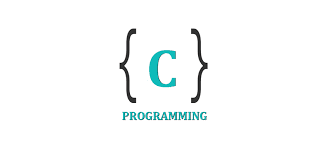

C Tutorial – Command Line Arguments

What is Command Line Arguments
When executing the program, you can pass values to the C program from the command line. These values are called command line arguments, and they are important to the program, especially when you want to control the program from the outside, rather than hard-coding these values in the code. Even all the program in Linux will provide command line arguments.
Use Command Line Arguments
Command line arguments are handled using main() function arguments, where argc refers to the number of arguments passed in, and argv[] is an pointer array which point to each argument passed to the program. The following is a simple example:
1 |
|
It produces the following result:
- No argument
1 | ./a.out |
- Single argument
1 | ./a.out aaarrrggg |
- Two arguments & Above
1 | ./a.out arg1 arg2 |
Explanation — argv[0], argv[1]…
You should know that argv[0] holds the name of the program itself and argv[1] is a pointer to the first command line argument supplied, and *argv[n] is the last argument. If no arguments are supplied, argc will be 1, and if you pass one argument then argc is set at 2.
You pass all the command line arguments separated by a space, but if argument itself has a space then you can pass such arguments by putting them inside double quotes " " or single quotes ' '. So, let’s try this:
1 | ./a.out "arg1 arg2" |
getopt() & getopt_long()
In Linux, we can use getopt() and getopt_long() to pass arguments:
1 | include<stdio.h> |
—————
Author：Theodore Cooper
Address： https://theodorecooper.github.io/2020/C-Tutorial-arg/
Copyright：Copyright © 2020 Theodore Cooper. All rights reserved.
—————